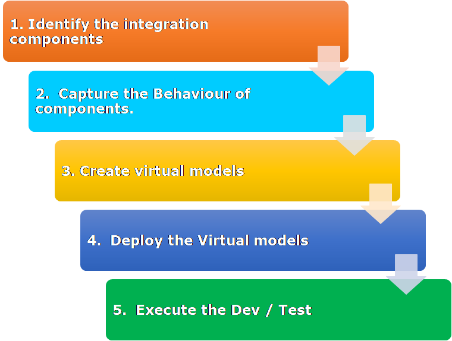

Service Virtualization - When integration points are a dependency for development
Being dependent on is nothing but relying upon. One has to wait for that other thing to get the task at hand started/completed.
If Dependencies are not resolved or not made available, the task cannot be started/completed.
If dependencies are made available, much of the testing from QA & Dev at a component level, Unit level, can “shift left,” or be moved earlier in the SDLC. This is because each component can be tested individually instead of waiting for complete assembly. Unit and regression testing would happen sooner, be more complete, and defects would be identified long before integration or user acceptance testing. Finding bugs earlier means issues are fixed sooner when the code is still fresh on the mind, instead later when people have to learn or regain context - leading to substantially higher remediation costs.
Different dependencies in Software Development and Testing :
Design phase-
- Requirements / User stories – Affects the schedule. Sprints can be started only after User Stories are available. As soon the draft is available, development and test design kick off.
- Tool Selection – Affects the schedule. Test cases cannot be designed - especially when integrating with legacy systems. Companies have to have licences available for the tools in order to start designing the automation framework and test cases.
Execution:
- Environment - Essential for testing. Organisation’s responsibility, and should get sorted at earlier stages.
- Integration components - to send the request to or to receive the response from. We have to wait till components are available to start testing
In this article, we’ll focus on Integration Components as a dependency. In future articles, we’ll explore how to deal with other types of missing dependencies.
Why Integration components may not be available:
- Nothing built yet
- Legacy systems - only one instance in prod
- Hosted by some other client
- All data flows cannot be validated – limited / Secured data
- Multiple calls are costly
- Required by different teams at the given time – which modifies the data – so not reliable
Impact when dependencies are not ready / not made available :
- Testing delay
- Increased waiting time
- Defect detection delay (exploratory / edge cases)
- Minimal or no Exploratory testing
- The cost to market increases
How about making a copy of the Integration components for each team as per their requirement rather than waiting for teams to finish their work and then to integrate.?
Virtualization comes to rescue here.
Virtualization = creating a copy / virtual image of something.
In our context, this ‘something’ is the Integration components/legacy systems. So, we create the virtual image/copy of Integration components to represent the functions.
How this works :
-
Identify the integration components
-
Capture the Behavior of components. (Request / Response)
-
Create virtual models - Service Virtualization converts these captured conversations and processed protocol request/response pairs into a model that behaves very similarly to the real thing and provides the scenario coverage and capabilities for software development and testing activities.
-
Deploy the Virtual models
-
Execute the Dev / Test activities either Automated or Exploratory way.

Benefits :
- Virtual models behave the same way as systems behave in real time
- Can cover complex test scenarios
- Developers & QA both can use it - at Unit test phase and all other test phases.
- Can be used for acceptance test to run in the Continuous Integration setup after deploying the build
- No dependencies on any team for completing work
- No dependencies on Systems/application to be available
- Available when required
- Early testing
- Cover all ‘In scope’ and edge case scenarios
- Early defect detection
- Continuous Delivery
- Shift Left
- Less time in execution when actual systems are ready
- Faster time to market
- Make money earlier!
Virtualization is just a helping hand! Myths:
- Testing with actual systems not required if Virtualization is in place - We should always perform the final testing with Real systems. This is because the real systems with the actual data will be integrated with, and not the virtual models with dummy data in production.
- Performance is the same as with the actual service - Virtual models are independent. The infrastructure these models are deployed in may not be production-like. The performance of virtual models vs that of the actual system will differ. Conducting non-functional testing with virtual models is acceptable and necessary, but we should always cover the end to end Non-Functional Tests with actual components integrated and in production-like environments to understand the performance we can expect
- Only connectivity test is required - Connectivity + functional + Non-functional+Exploratory - All testing is required with the actual system as well.
Smelling the coffee and actually drinking the coffee has got a difference. Smelling doesn’t fill your stomach. In a similar way, Virtualization alone doesn’t prove your code or integration completely. You have to test with the actual system to prove.
When NOT to use Service Virtualization Tools:
- When you can use Mocking frameworks to test between code within the same system
- When a stub can be generated via tools like Mountebank - sparing expensive license cost.
- No dependence on legacy systems - use Mocks and Stubs instead
Stubs, mocks, virtualization - all same? - Read more in my next article!
Summary : Virtualization helps in early identification of the defects, if any, and speeds up test execution. When the actual systems are integrated - as most of the flow is already verified against the virtual models, hence, the chances of failure are less while testing with actual systems. Virtualization helps in speeding up execution and making life simple when actual systems are integrated.